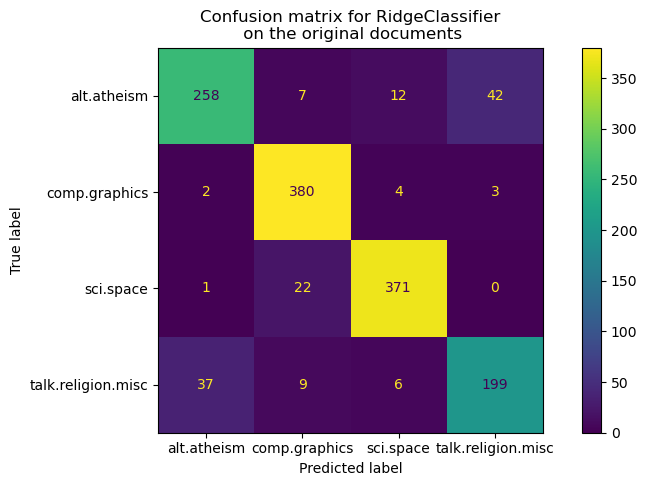
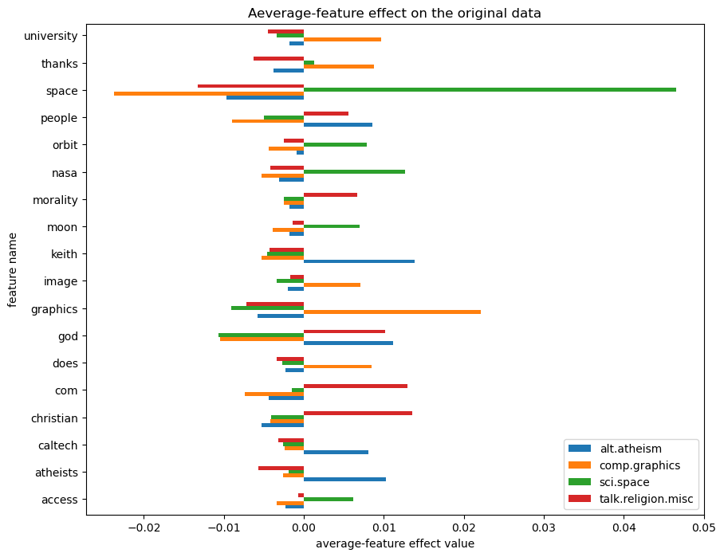
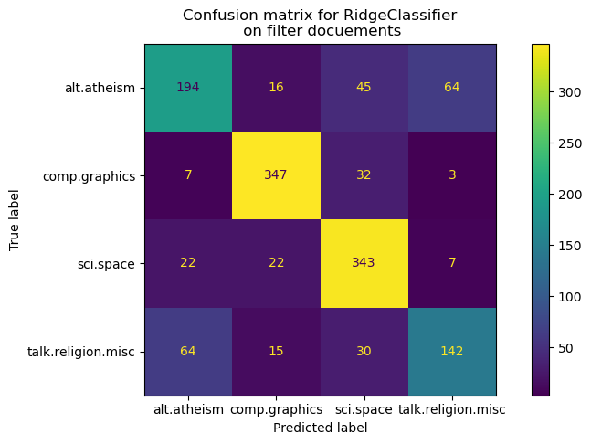
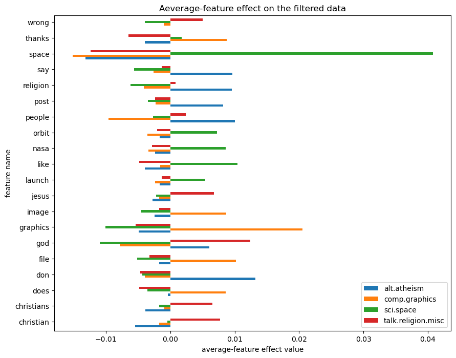

Classification of text documents using sparse features#
This example uses a Tf-idf-weighted document-term sparse matrix to encode the features and demonstrates various classifiers that can efficiently handle sparse matrices.
Loading and vectorizing the 20 newsgroups text dataset#
fetch_20newsgroups function load data, 18,000 newsgroups posts on 20 topics split in two subsets: one for training (or development) and the other one for testing (or for performance evaluation). Note that, by default, the text samples contain some message metadata such as ‘headers’, ‘footers’ (signatures) and ‘quotes’ to other posts. The fetch_20newsgroups function therefore accepts a parameter named remove to attempt stripping such information that can make the classification problem “too easy”.
from time import time
from sklearn.datasets import fetch_20newsgroups
from sklearn.feature_extraction.text import TfidfVectorizer
categories = [
"alt.atheism",
"talk.religion.misc",
"comp.graphics",
"sci.space",
]
# example : docs["hello", "world"]
def size_mb(docs):
return sum( len(s.encode("utf-8")) for s in docs) / 1e6
#
def load_dataset(verbose=False, remove=()):
""" load and vectorize the 20 newsgroups dataset. """
data_train = fetch_20newsgroups(
subset="train",
categories= categories,
shuffle=True,
random_state=42,
remove=remove,
)
data_test = fetch_20newsgroups(
subset="test",
categories= categories,
shuffle=True,
random_state=42,
remove=remove,
)
# order of lables in targer_names can be different from categories
target_names = data_train.target_names
y_train, y_test = data_train.target, data_test.target
# Extracting features from the training data using a sparse vectorizer
t0 = time()
vectorizer = TfidfVectorizer( # ❓
sublinear_tf=True, max_df=0.5, min_df=5, stop_words="english"
)
X_train = vectorizer.fit_transform(data_train.data)
duration_train = time() - t0 # ❓
# Extracting features from the test data using the same vectorizer
t0 = time()
X_test = vectorizer.transform(data_test.data)
duration_test = time() - t0
feature_names = vectorizer.get_feature_names_out()
if verbose:
# compute size mb of loaded data
data_train_size_mb = size_mb(data_train.data)
data_test_size_mb = size_mb(data_test.data)
print(
f"{len(data_train.data)} documents - "
f"{data_train_size_mb:.2f}MB (training set)"
)
print(
f"{len(data_test.data)} documents - "
f"{data_test_size_mb:.2f}MB (test set)"
)
print(
f"vectorize training done in {duration_train:.3f}s "
f"at {data_train_size_mb / duration_train : .3f}MB/s"
)
print(
f"n_samples: {X_train.shape[0]}, n_features: {X_train.shape[1]}"
)
print(
f"vectorize test done in {duration_test:.3f}s "
f"at {data_test_size_mb / duration_test :.3f}MB/s"
)
print(
f"n_samples: {X_test.shape[0]}, n_features: {X_test.shape[1]}"
)
return X_train,X_test, y_train, y_test, feature_names, target_names
X_train,X_test, y_train, y_test, feature_names, target_names = load_dataset(
verbose=True
)
2034 documents - 3.98MB (training set)
1353 documents - 2.87MB (test set)
vectorize training done in 0.940s at 4.232MB/s
n_samples: 2034, n_features: 7831
vectorize test done in 0.574s at 4.992MB/s
n_samples: 1353, n_features: 7831
RidgeClassfier#
Contrary to LogisticRegression, RidgeClassifier does not provide probabilistic predictions (no predict_proba method), but it is often faster to train.
from sklearn.linear_model import RidgeClassifier
clf = RidgeClassifier(tol=1e-2, solver="auto")
clf.fit(X_train, y_train)
pred = clf.predict(X_test)
We plot the confusion matrix of this classifier to find if there is a pattern in the classification errors.
import matplotlib.pyplot as plt
from sklearn.metrics import ConfusionMatrixDisplay
fig,ax = plt.subplots(figsize = (10,5))
ConfusionMatrixDisplay.from_predictions(y_test, pred, ax = ax)
ax.xaxis.set_ticklabels(target_names)
ax.yaxis.set_ticklabels(target_names)
ax.set_title(
f"Confusion matrix for {clf.__class__.__name__}\n on the original documents"
)
Text(0.5, 1.0, 'Confusion matrix for RidgeClassifier\n on the original documents')

🔍 Manual Observation
documents of the alt.atheism class are often confused with documents with the class talk.religion.misc class. And vice-versa
documents of the sci.space class can be misclassified as comp.graphics while the converse is much rarer. But converse is much rarer
We can gain a deeper understanding of how this classifier makes its decisions by looking at the words with the highest average feature effects. For example, some words might have strong positive/negtive effects on a category.
import numpy as np
import pandas as pd
def plot_feature_effects():
# weight * feature_avg
# This represents the average contribution of each feature to the clssifier's decision
average_feature_effects = clf.coef_ * np.asarray(X_train.mean(axis=0))
#print(X_train.shape,clf.coef_.shape, y_train.shape, average_feature_effects.shape)
# stat every target top5 feature contribution.
for i, label in enumerate(target_names):
top5 = np.argsort(average_feature_effects[i])[-5:][::-1]
if i == 0:
top = pd.DataFrame(feature_names[top5], columns = [label])
top_indices = top5
else:
top[label] = feature_names[top5]
top_indices = np.concatenate((top_indices, top5), axis=None)
top_indices = np.unique(top_indices)
predictive_words = feature_names[top_indices]
#print(top)
# plot feature effects
bar_size = 0.25
padding = 0.75
y_locs = np.arange(len(top_indices)) * (4 * bar_size + padding)
fig, ax = plt.subplots(figsize=(10,8))
for i, label in enumerate(target_names):
ax.barh( # horizontal chart
y_locs + (i - 2) * bar_size,
average_feature_effects[i, top_indices],
height=bar_size,
label=label,
)
ax.set(
yticks = y_locs,
yticklabels=predictive_words,
ylim=[
0 - 4*bar_size,
len(top_indices)*(4*bar_size + padding) - 4*bar_size
]
)
ax.legend(loc="lower right")
ax.set_xlabel("average-feature effect value")
ax.set_ylabel("feature name")
print("top5 keywords per class: \n", top)
return ax
plot_feature_effects().set_title("Aeverage-feature effect on the original data")
top5 keywords per class:
alt.atheism comp.graphics sci.space talk.religion.misc
0 keith graphics space christian
1 god university nasa com
2 atheists thanks orbit god
3 people does moon morality
4 caltech image access people
<Axes: title={'center': 'Aeverage-feature effect on the original data'}, xlabel='average-feature effect value', ylabel='feature name'>

📊
We can observe that most keywords are often strongly positively or negtively with a single class. And it’s easy to interpret. However, some not. Such as “god”, there are two classes.
Furthermore, in this version of the dataset, such as ‘caltech’ , the word is the top5 feature for atheism due to pollution in the dataset coming from some metadata such as email addr.
data_train = fetch_20newsgroups(
subset="train",
categories= categories,
shuffle=True,
random_state=42,
)
for doc in data_train.data:
if 'caltech' in doc: # keith@cco.caltech.edu
print(doc)
break
From: livesey@solntze.wpd.sgi.com (Jon Livesey)
Subject: Re: Morality? (was Re: <Political Atheists?)
Organization: sgi
Lines: 93
Distribution: world
NNTP-Posting-Host: solntze.wpd.sgi.com
In article <1qlettINN8oi@gap.caltech.edu>, keith@cco.caltech.edu (Keith Allan Schneider) writes:
|> livesey@solntze.wpd.sgi.com (Jon Livesey) writes:
|>
|> >>>Explain to me
|> >>>how instinctive acts can be moral acts, and I am happy to listen.
|> >>For example, if it were instinctive not to murder...
|> >
|> >Then not murdering would have no moral significance, since there
|> >would be nothing voluntary about it.
|>
|> See, there you go again, saying that a moral act is only significant
|> if it is "voluntary." Why do you think this?
If you force me to do something, am I morally responsible for it?
|>
|> And anyway, humans have the ability to disregard some of their instincts.
Well, make up your mind. Is it to be "instinctive not to murder"
or not?
|>
|> >>So, only intelligent beings can be moral, even if the bahavior of other
|> >>beings mimics theirs?
|> >
|> >You are starting to get the point. Mimicry is not necessarily the
|> >same as the action being imitated. A Parrot saying "Pretty Polly"
|> >isn't necessarily commenting on the pulchritude of Polly.
|>
|> You are attaching too many things to the term "moral," I think.
|> Let's try this: is it "good" that animals of the same species
|> don't kill each other. Or, do you think this is right?
It's not even correct. Animals of the same species do kill
one another.
|>
|> Or do you think that animals are machines, and that nothing they do
|> is either right nor wrong?
Sigh. I wonder how many times we have been round this loop.
I think that instinctive bahaviour has no moral significance.
I am quite prepared to believe that higher animals, such as
primates, have the beginnings of a moral sense, since they seem
to exhibit self-awareness.
|>
|>
|> >>Animals of the same species could kill each other arbitarily, but
|> >>they don't.
|> >
|> >They do. I and other posters have given you many examples of exactly
|> >this, but you seem to have a very short memory.
|>
|> Those weren't arbitrary killings. They were slayings related to some
|> sort of mating ritual or whatnot.
So what? Are you trying to say that some killing in animals
has a moral significance and some does not? Is this your
natural morality>
|>
|> >>Are you trying to say that this isn't an act of morality because
|> >>most animals aren't intelligent enough to think like we do?
|> >
|> >I'm saying:
|> > "There must be the possibility that the organism - it's not
|> > just people we are talking about - can consider alternatives."
|> >
|> >It's right there in the posting you are replying to.
|>
|> Yes it was, but I still don't understand your distinctions. What
|> do you mean by "consider?" Can a small child be moral? How about
|> a gorilla? A dolphin? A platypus? Where is the line drawn? Does
|> the being need to be self aware?
Are you blind? What do you think that this sentence means?
"There must be the possibility that the organism - it's not
just people we are talking about - can consider alternatives."
What would that imply?
|>
|> What *do* you call the mechanism which seems to prevent animals of
|> the same species from (arbitrarily) killing each other? Don't
|> you find the fact that they don't at all significant?
I find the fact that they do to be significant.
jon.
✅
Meta info is only side information.
one would rather want our text classifier to only learn from the “main content” of each text document instead of relying on the leaked identity of the writers.
Model with meta stripping#
(
X_train,
X_test,
y_train,
y_test,
feature_names,
target_names,
) = load_dataset(remove=("headers", "footers", "quotes"))
clf = RidgeClassifier(tol=1e-2, solver="auto")
clf.fit(X_train, y_train)
pred = clf.predict(X_test)
fig, ax = plt.subplots(figsize=(10,5))
ConfusionMatrixDisplay.from_predictions(y_test, pred, ax=ax)
ax.xaxis.set_ticklabels(target_names)
ax.yaxis.set_ticklabels(target_names)
ax.set_title(
f"Confusion matrix for {clf.__class__.__name__}\n on filter docuements"
)
Text(0.5, 1.0, 'Confusion matrix for RidgeClassifier\n on filter docuements')

plot_feature_effects().set_title("Aeverage-feature effect on the filtered data")
top5 keywords per class:
alt.atheism comp.graphics sci.space talk.religion.misc
0 don graphics space god
1 people file like christian
2 say thanks nasa jesus
3 religion image orbit christians
4 post does launch wrong
Text(0.5, 1.0, 'Aeverage-feature effect on the filtered data')
